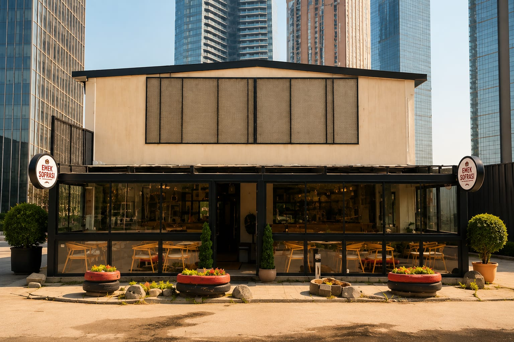
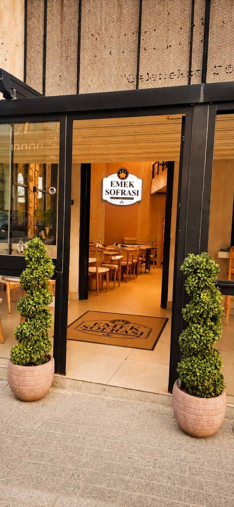
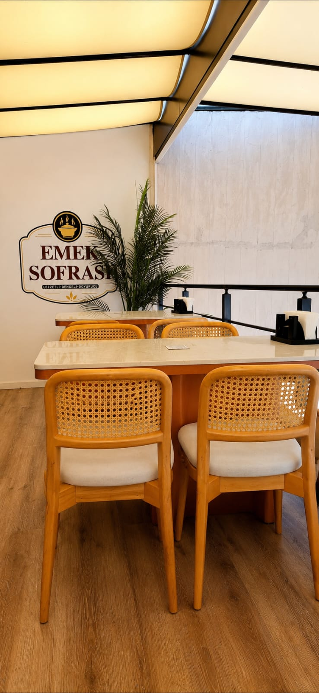

Hikayemiz
Her emek, bir sofrayı; her sofra da bir hikayeyi taşır.
Emek Sofrası'nın hikayesi, aslında hiç planlamadığımız bir şekilde başladı. İlk düşüncemiz farklı bir konsepti. Ancak Maslak'ta bu mekanı gördüğümüzde her şey değişti.
Üç ortak olarak birbirimize baktık ve burada insanların güvenle gelebileceği, sıcak ev yemekleri sunan bir sofra olmasının çok daha doğru olacağına karar verdik.
İşletmeyi devraldıktan sonra sıra en önemli adımlardan birine geldi, bu sofraya bir isim bulmak. Birçok fikir konuşuldu.


O sırada ben de ortaklarımla birlikte düşünürken, bu işletmenin arkasında büyük bir emek, özveri ve alın teri olacağını konuştuk. İşte tam da bu yüzden hepimizin içine sinen tek isim ortaya çıktı: Emek Sofrası.
Çünkü bu isim yalnızca bir tabelayı değil, mutfakta başlayan emeği, özenle hazırlanan her tabağı ve misafirlerimizle kurduğumuz samimi bağı anlatıyordu.
Bugün de ilk günkü aynı anlayışla, her gün sofralarımızı aynı özenle hazırlıyor, ev yemeğinin sıcaklığını, emeğin değerini ve paylaşmanın güzelliğini misafirlerimizle buluşturuyoruz.



Hakkımızda
Günün yoğunluğunda,
sıcak bir sofraya yer açıyoruz.
Emek Sofrası'nı üç ortak olarak, Maslak'ın yoğun temposunda çalışanların, öğrencilerin ve yolu buraya düşen herkesin sıcak ev yemeklerine kolayca ulaşabileceği bir sofra oluşturmak için kurduk.
Yemeklerimizi her gün taze hazırlıyor; misafirlerimizin uzun süre beklemeden, keyifle yemek yiyip biraz soluklanarak günlerine devam edebilmelerini önemsiyoruz.
Yakında başlayacak paket servisimizle de işinden veya okulundan ayrılamayan misafirlerimize ulaşmak, yoğun günlerinde onlara zaman kazandırmak istiyoruz.
Çünkü bizim için Emek Sofrası, yalnızca yemek yenilen bir yer değil; günün koşuşturması içinde verilen sıcak bir mola.
Her Emek, Bir Sofra Hak Eder